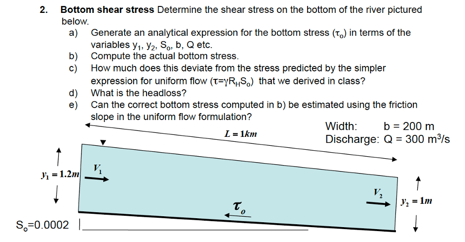

7) Streams, rivers, and channels#
Lab 7: Rating curves & Mixing and Dispersion in Rivers#
Download the lab and data files to your computer. First you will need the lab worksheet Mixing and Dilution Worksheet This is will be part of Homework 8, but we want to start early.
-
data: Lyell_h_Q_sorted.mat
image: LyellForkTuolumnegagesite
Note, this python workbook is optional, if you are interested in how rating curves are made.
Lab 7-2: Mixing and Dispersion in Rivers
data (to examine not in python): CEE348_dye_data_Lab7.xlsx
data (to examine in python): Dye_data_GA050630c.csv
{kind=link}
Homework 7:#
Problem 1: (note, we solved this together in lab class, but you need to turn in your write-up for homework)#

Hints: For 1a, use the full conservation of momentum expression derived in class, before we simplified using uniform flow. Remember that the friction slope, Sf = hL/L (head loss divided by the length). For 1b, use the expression you generated in 1a.Friction slope
a) Using the values from Problem 1, above, justify why it is common practice to use the water surface slope (Ssurface) as an approximation for the friction slope (Sf). (Hint: Use your equation from above with both values plugged in and see how different they are.)
b) What is the percent difference between the actual friction slope and the water surface slope?
c) When would you expect the difference between Ssurface and Sf to be large?
Problem 2: River bed erosion#
To avoid erosion, the river bed is armored with large cobbles, increasing the bed resistance. In a 1km section of the river the depth decreases from 1.9 m to 1.5 m. For this calculation you are told that the discharge is 44 m3/s. The channel bed slope and width can be considered to be the same as in the prior problem. Determine:
The head loss and friction slope
The shear velocity, u*